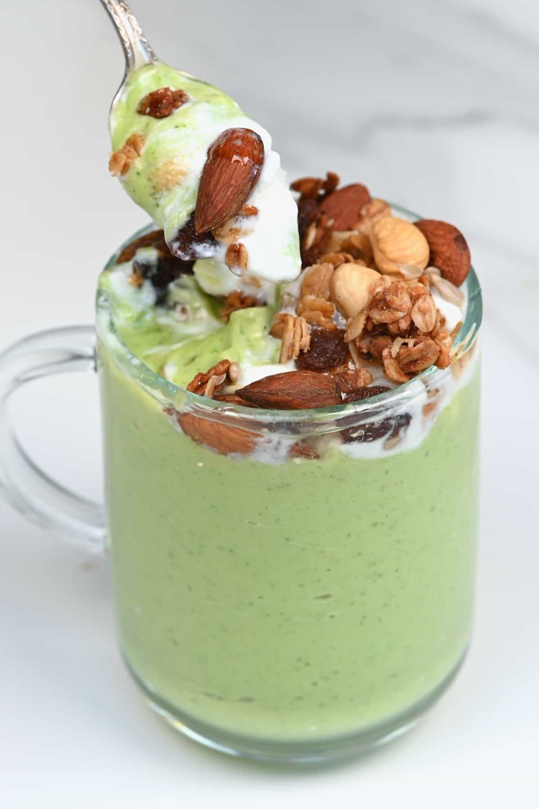

Avacado-dry fruit smoothie

Description:
Avacado dry fruit smoothie is packed with healthy fats, protein, and fiber, making it a great option for a nutritious breakfast or snack.
Ingredients:
- 1 ripe avocado
- 1 banana
- 1 cup milk (dairy or non-dairy like almond milk or soy milk)
- 1/2 cup Greek yogurt (optional for extra creaminess)
- 2 tablespoons honey or maple syrup (adjust to taste)
- 1/4 cup mixed dry fruits (almonds, walnuts, cashews, pistachios)
- 1 tablespoon chia seeds or flaxseeds (optional)
- 1/2 teaspoon vanilla extract (optional)
- A pinch of cinnamon (optional)
- Ice cubes (optional)
Steps:
- Cut the avocado in half, remove the pit, and scoop out the flesh.
- Peel and slice the banana.
- If your dry fruits are not pre-chopped, chop them into smaller pieces for easier blending.
- In a blender, add the avocado flesh, banana slices, milk, and Greek yogurt.
- Add the honey or maple syrup for sweetness.
- Add the chopped mixed dry fruits.
- If using, add the chia seeds or flaxseeds, vanilla extract, and a pinch of cinnamon.
- Blend on high until the mixture is smooth and creamy.
- If the smoothie is too thick, add more milk a little at a time until you reach your desired consistency.
- If you prefer a thicker smoothie, you can add a few ice cubes and blend again.
- Taste the smoothie and add more honey or maple syrup if needed.
- Pour the smoothie into glasses.
- You can garnish with a sprinkle of chopped dry fruits or a dash of cinnamon on top if desired.